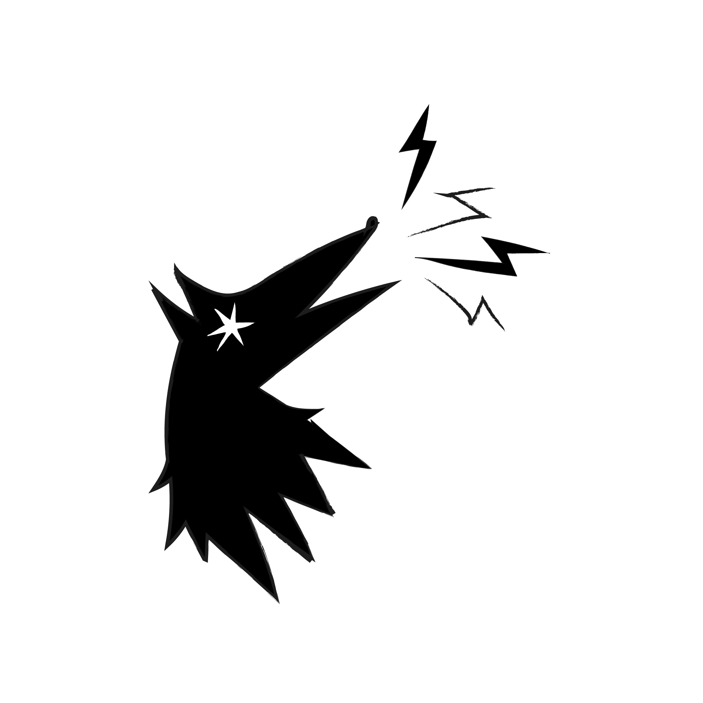

CEDERNOPOLI è il giornale di comunità del quartiere Cederna-Cantalupo, realizzato dagli studenti della scuola secondaria di primo grado Walter Bonatti insieme a educatori, associazioni e realtà del territorio.
Nato nell'ambito del progetto "Cederna in Azione: Costruire comunità, insieme", parte del Patto di Cittadinanza Cederna-Cantalupo, il giornale raccoglie storie, memorie, interviste, notizie e punti di vista che raccontano la vita del quartiere.
Attraverso il lavoro di redazione, ragazze e ragazzi osservano il territorio da protagonisti, sviluppano competenze giornalistiche e creative e contribuiscono a costruire un dialogo tra generazioni, associazioni e cittadini.
CEDERNOPOLI è un giornale aperto al quartiere.
Hai una storia da raccontare, una fotografia da condividere, una proposta per il quartiere o vuoi entrare in contatto con la redazione?
Scrivici a: